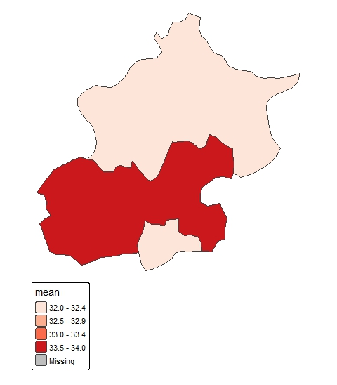
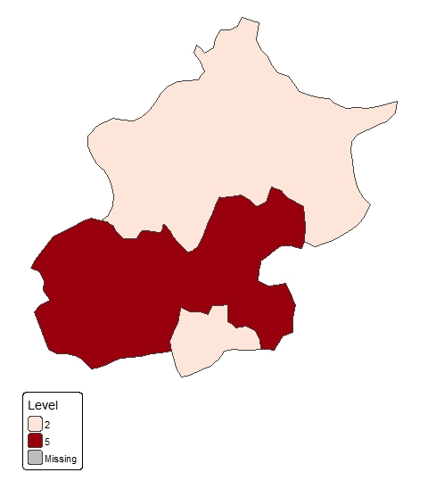

This week introduced the use of remote sensing for analysing urban heat, combining two satellite data sources — Landsat and MODIS — within Google Earth Engine (GEE) to examine surface temperatures across Beijing’s administrative districts.
The practical started by loading Beijing’s boundaries from the FAO GAUL dataset and filtering Landsat 8 imagery to summer months (May–September 2022) with very low cloud cover. A key step was applying scale factors to convert raw thermal band values into surface temperature in Celsius — subtracting 273.1 from the Kelvin values. The mean summer temperature image was then clipped to Beijing and visualised using a colour gradient from blue to dark red.
MODIS data from both the Terra and Aqua satellites was also processed. Unlike Landsat, which produced only 5 usable images for the period due to its 16-day revisit cycle, MODIS provided over 100 images — making it far better suited to time series analysis, even if its 1km spatial resolution is coarser. After merging the two MODIS collections and reducing to a mean, the time series was plotted — first for Beijing overall, then broken down by district using ui.Chart.image.seriesByRegion.
The reduceRegions function was used to calculate mean Landsat temperature per level 2 district, which was exported as a shapefile and mapped in R using tmap. The map (Figure 1) clearly showed higher mean temperatures (33.5–34.0°C) in southern and central districts compared to northern ones (32.0–32.4°C).
Finally, the practical replicated the heat index used by the BBC and 4 Earth Intelligence (Wilson, 2020), which ranked areas by their heat hazard score using percentile categories. Districts were assigned to five levels based on where their mean temperature fell in the overall distribution — Level 1 being the coolest 40% and Level 5 the hottest 1%. This was implemented both in R using case_when() and in GEE using nested conditional logic. The resulting map (Figure 2) showed that most southern Beijing districts fell into Level 5 — the most heat-exposed category.


What struck me most about this week is how the heat index transforms a continuous temperature dataset into something that communicates risk clearly. The BBC used this approach to make satellite-derived temperatures legible to a general audience and to local policymakers. Research has shown that urban heat is not distributed randomly — historically disadvantaged areas tend to have less tree cover and more heat-absorbing surfaces, leading to systematically higher temperatures (Wilson, 2020). This means the heat index is not just a technical output but a tool for identifying which communities bear a disproportionate heat burden.
For Beijing specifically, the north–south pattern in the maps aligns with what we might expect given the denser urban fabric and greater impervious surface coverage in the southern districts. A natural next step would be to overlay the heat index with population density or health vulnerability data to identify where interventions — such as green roofs, street trees, or cool pavements — would have the greatest impact (MacLachlan et al., 2021).
MODIS’s temporal depth also opens up possibilities beyond a single snapshot. Rather than comparing districts at one point in time, it would be possible to test whether temperatures in the hottest districts are increasing faster than in cooler ones — which would have important implications for planning under climate change.
I went into this practical expecting it to be similar to the classification work from previous weeks, but it felt quite different. The output was less about labelling land cover and more about measuring something directly consequential — how hot places actually are — and then communicating that in a way that connects to real policy decisions.
The scale factor step caused me some confusion early on. I understood conceptually that raw satellite values need converting, but I initially applied the MODIS scale factor without subtracting the Kelvin offset, which produced nonsensical temperature values. Working through that error helped me understand what the numbers actually represent, which made the rest of the analysis feel more grounded.
The heat index section was where the practical clicked for me. Taking a mean temperature value and converting it into a ranked category feels simple, but the logic behind it — that what matters is not the absolute temperature but how it compares to other places — is actually quite meaningful. The index captures relative position rather than an absolute threshold, which makes it more useful for comparing across a city.
I was also surprised by how much the two sensors differ in practice. Knowing that Landsat has a 16-day revisit cycle and MODIS covers the Earth every 1–2 days is one thing; seeing it produce 5 versus 108 images for the same period made the trade-off between spatial and temporal resolution feel very real.